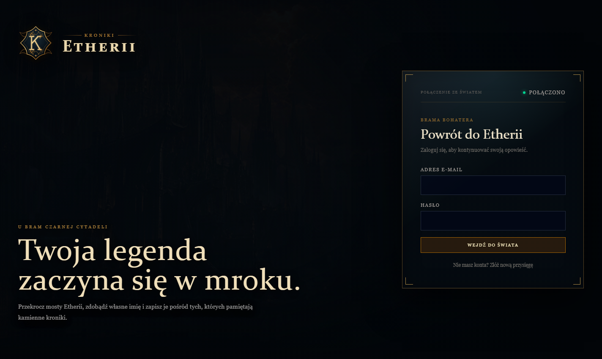
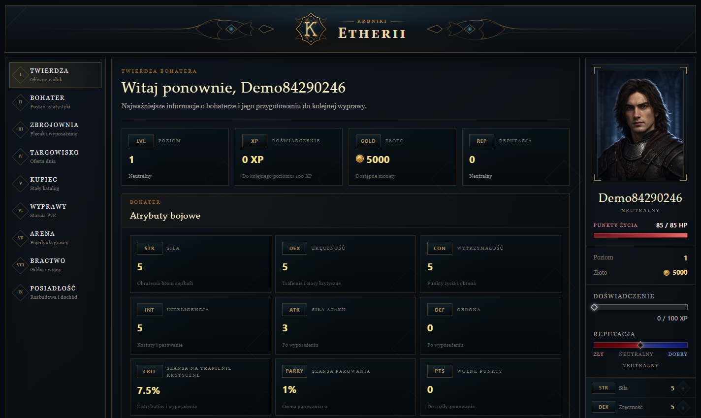
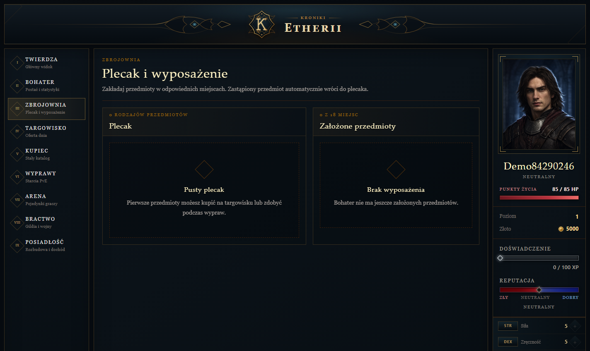
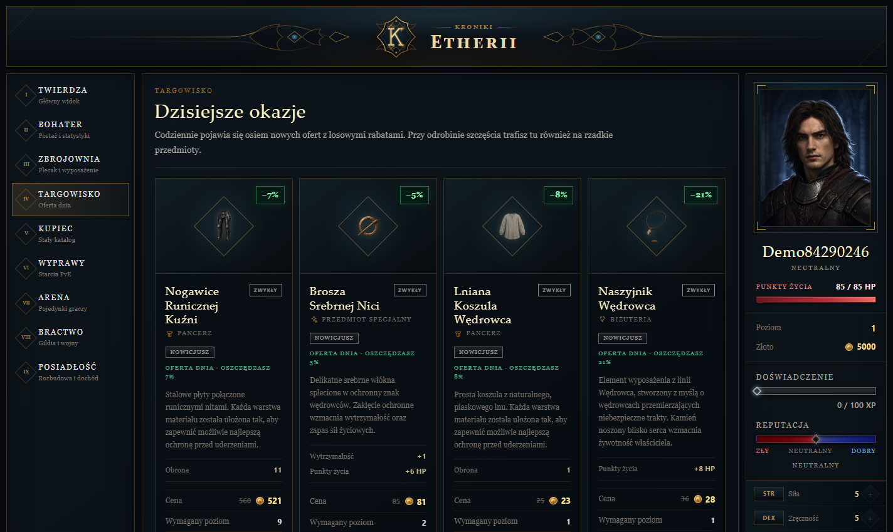
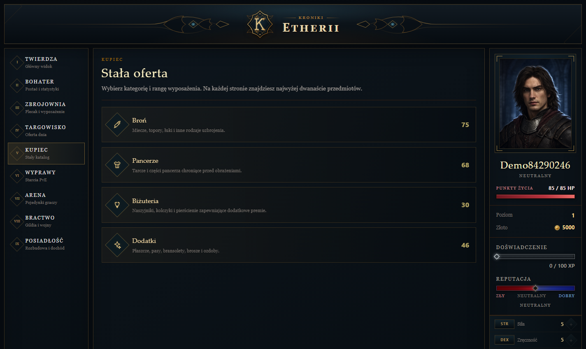
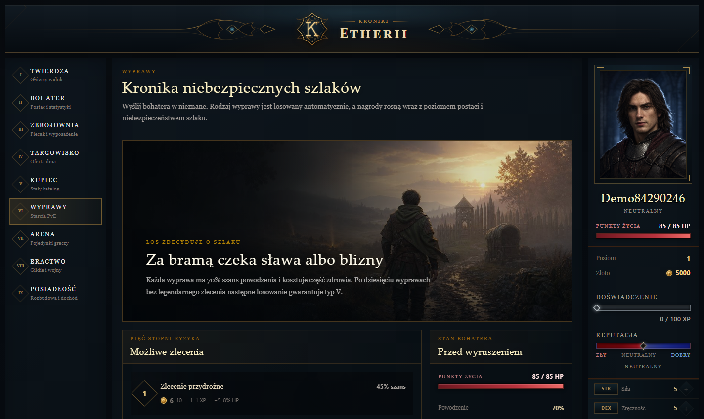
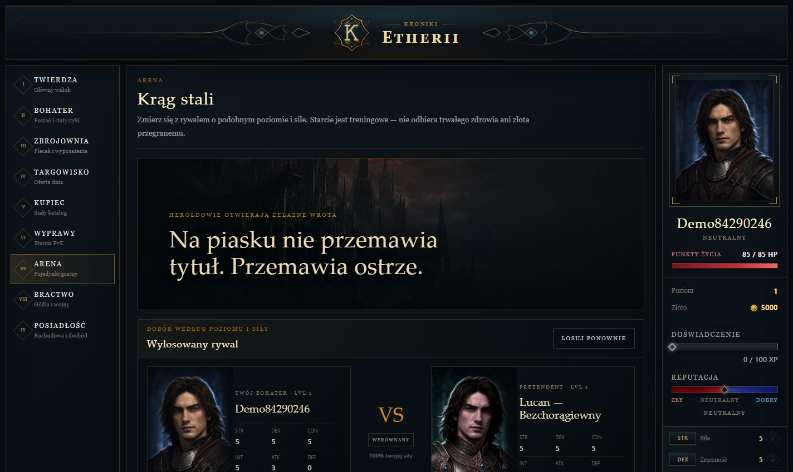

Kroniki Etherii
Przeglądarkowa gra RPG z rozwojem bohatera, ekonomią, wyprawami, reputacją i symulacją walki.

Logowanie i rejestracja
Osobny ekran wejścia do gry, bezpieczne haszowanie haseł oraz sesja oparta na krótkotrwałym tokenie dostępu i rotowanym tokenie odświeżania.

Twierdza i rozwój bohatera
Poziom, doświadczenie, złoto, HP, reputacja oraz atrybuty bojowe są prezentowane w jednym spójnym panelu. Po awansie gracz rozdziela zdobyte punkty nauki.

Plecak i zbrojownia
Przedmioty posiadają poziom, rangę, rzadkość i statystyki. System pilnuje fizycznych slotów wyposażenia, obsługuje zamianę przedmiotów i sprzedaż z potwierdzeniem.

Losowa oferta targowiska
Codzienna oferta wykorzystuje ważone rabaty i szanse rzadkości. Niedostępny zakup blokuje wyłącznie przycisk, pozostawiając wygląd oraz parametry przedmiotu widoczne.

Stała oferta kupca
Pełny katalog przedmiotów podzielono na kategorie, rangi poziomowe i strony. Ceny rosną wraz z rangą oraz rzadkością wyposażenia.

Wyprawy bohatera
Pięć losowanych stopni ryzyka skaluje złoto, doświadczenie i utratę HP. Wybór szlachetnej lub mrocznej drogi przesuwa reputację, a wynik otrzymuje pełnoekranową prezentację.

Arena i dobieranie przeciwnika
System szuka bota o zbliżonym poziomie i sile bojowej. Walka jest obliczana przez wspólny silnik, zapisywana runda po rundzie i odtwarzana z paskami HP, krytykami, pudłami oraz parowaniem.
Technologie i jakość
- React i TypeScript
- NestJS i Prisma ORM
- PostgreSQL i Redis
- Docker Compose
- Relacyjny zapis rund walki
- Transakcje ekonomiczne
- Walidacja danych wejściowych
- Rate limiting i cooldowny
- Responsywny interfejs
- Automatyczne migracje i dane początkowe